| 日付 | 2021年5月2日（日） |
|---|---|
| 山域 | 奥秩父 |
| メンバー | 家族（妻、長女・10歳、長男・7歳） |
| 山行形態 | 子連れ日帰り |
| アクセス | 車 |
| ルート (Map) | 登山口 (9:01) - (9:38) 水ヶ森林道 - (10:09) 電波塔 - (10:43) 帯那山 - (10:58) 奥帯那山 - (11:11) 帯那山 (11:40) - (12:24) 水ヶ森林道 - (12:45) 登山口 |
今年のGWは予定が変わりまくった。
息子のスポーツチームの試合の予定が突如入ったり、
緊急事態宣言でそれが中止になったり、
新潟にキャンプ旅行を予定していたのがコロナ蔓延により
キャンプ場からキャンセル依頼が届いたり。
天気予報も安定せずで、予定が立てられなかったが、
ひとまず5/2の天気はそこそこのため、日帰りで山に行くことにする。
群馬、山梨、静岡、神奈川の山の候補を考えたが、
当日の朝の天気予報と道路の混み具合を確認して、
山梨の帯那山に向かうことにする。
帯那山登山口の側にあるスペースに車を停める。標高1020m。
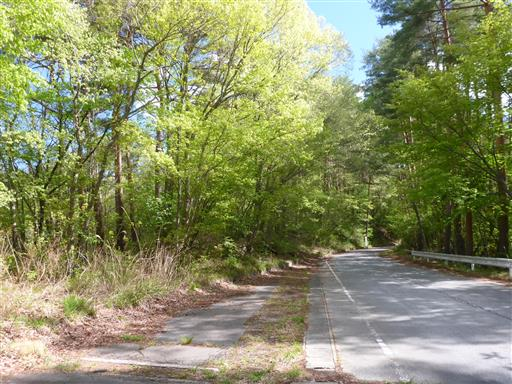
登山口と思われる場所にロープが張られている。
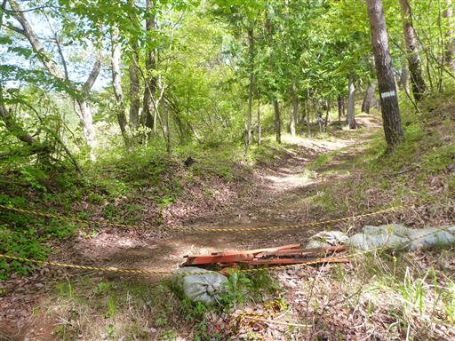
よく見ると標識があるので、ここが帯那山の登山口で間違いなさそうだ。
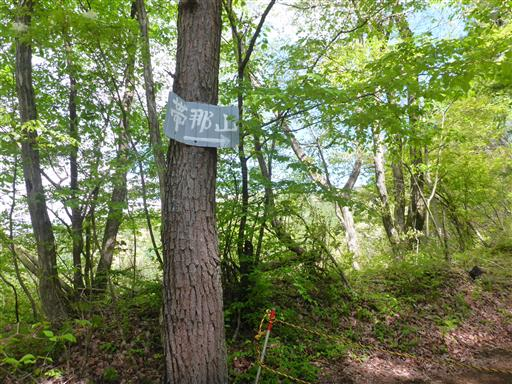
登山道からすぐのところに祠がある。

針葉樹と広葉樹の新緑が混ざる道を歩いていく。
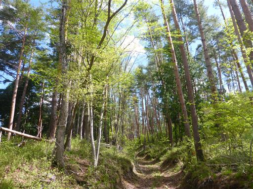
この道はやたら倒木が多い。乗り越えたり潜ったりが大変だ。
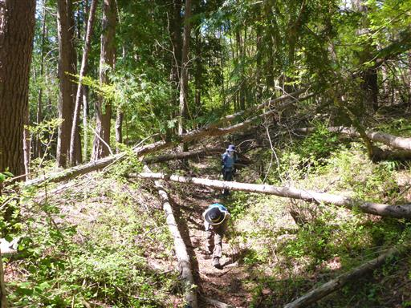
木がつっかえ棒の上に倒れこんでいる。奇跡のバランスだ。
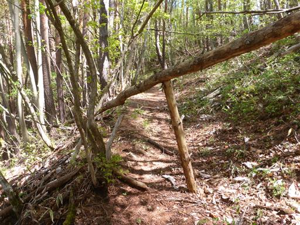
水ヶ森林道に出てくる。
ここから林道を歩く選択肢もあるが、往路は尾根道を歩くことにする。
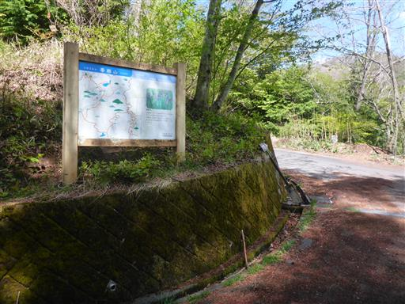
林道に標識はなかったが、少し登ると標識が見つかる。
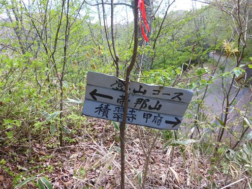
しばらく歩くとはげ山に出てくる。
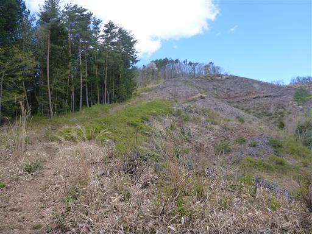
木がない分、展望は非常に良い。
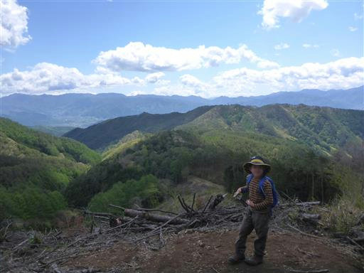
下の方から見えていた建物。
何だろうと思って近づいてみたが、どうやら電波塔のようで
特に面白い施設ではないようだ。
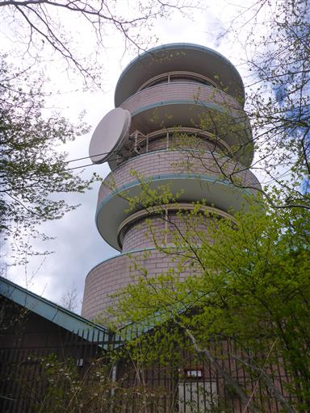
少し離れたところから電波塔を眺める。
おしゃれな建物で公園にある展望台のように見える。
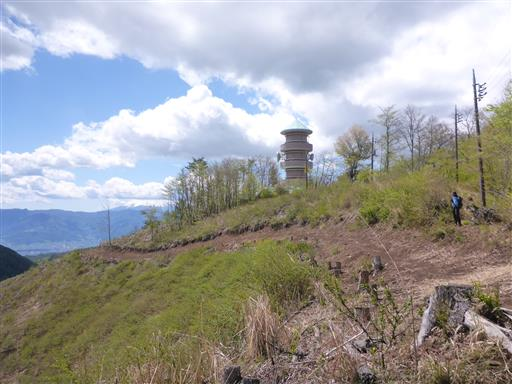
こちらの道も林道に出てくる。走ってる車があるのが驚きだ。
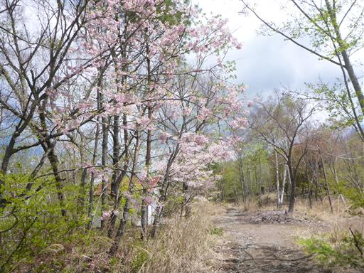
この辺りは桜が咲いている。これは植えられたものだろうか？
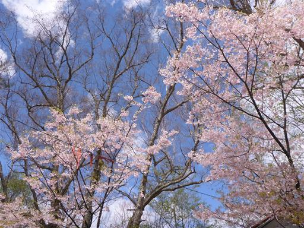
富士山が見えるが残念ながら頭は雲の中だ。
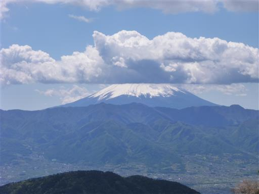
しばらく林道歩きを強いられる。この辺りは林道だらけだ。
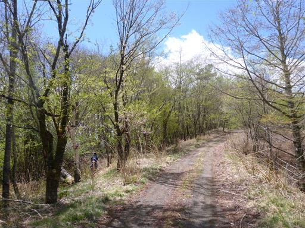
牧場のゲート。すでに牧場は閉鎖されていて、かつて牧場があった面影はない。
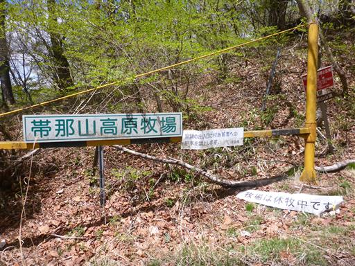
車道から離れて登山道に入ると、すぐに山頂部が見えてくる。
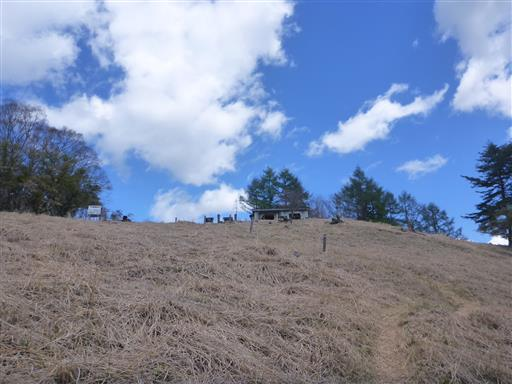
帯那山山頂に到着。標高1370m。
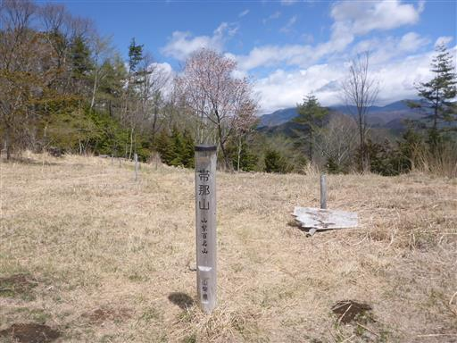
山頂からの展望は南の方面が開けている。
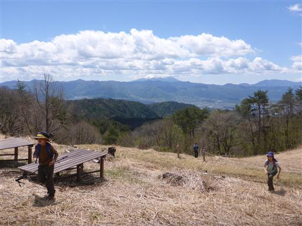
山頂は広々としている。廃墟となっているコンクリートの建物が建っている。
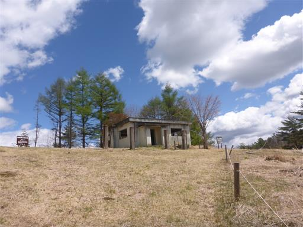
娘はこういうところを覗くのが好き。内部を物色している。

昼食をとる前に奥帯那山を往復することにする。
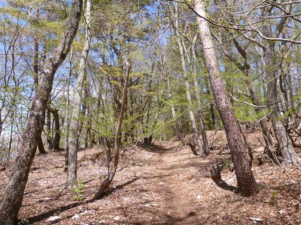
すぐに奥帯那山に到着。標高1422m。
こちらが帯那山の本当の山頂のようだ。残念ながらこちらは展望がない。
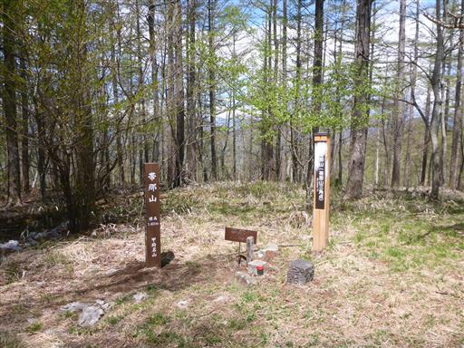
帯那山に戻ってきて昼食をとる。
戻ってきたら登山者の数が増えていて、数グループが休んでいる。
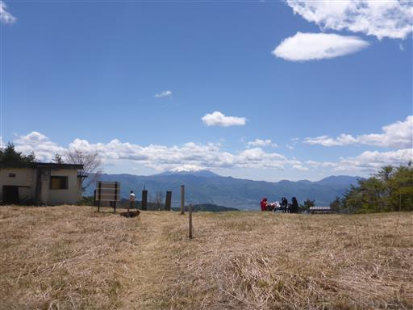
昼食をとったら下山開始。下山は尾根道コースではなく林道コースを歩く。
左手には金峰山が見えている。山頂部は雪で薄らと白く染まっている。
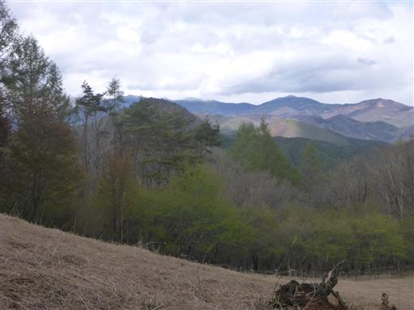
林道から分かりにくい分岐のショートカット道に入る。
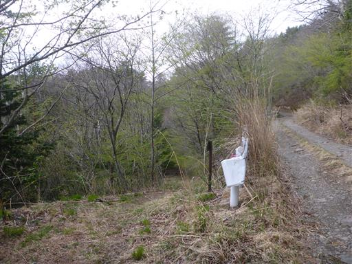
ミツバツツジが咲いている。
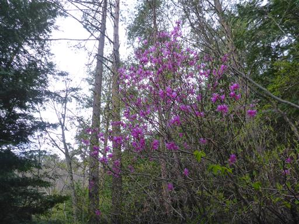
立派な林道に出てくる。

この辺りも桜がきれい。尾根の上に、往路で見学した電波塔が見えている。
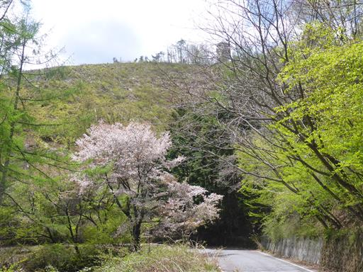
尾根道と林道の分岐点まで戻ってくる。あとは元来た道を戻る。
山頂からの展望はそれなりに良かったが、登山道はあちらこちら林道だらけで何ともつまらなく、
歩いた距離も短かったため少々消化不良の登山だった。
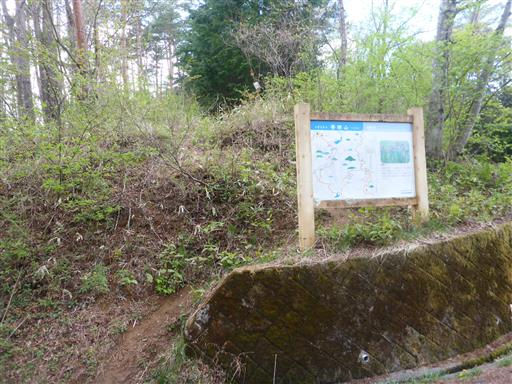